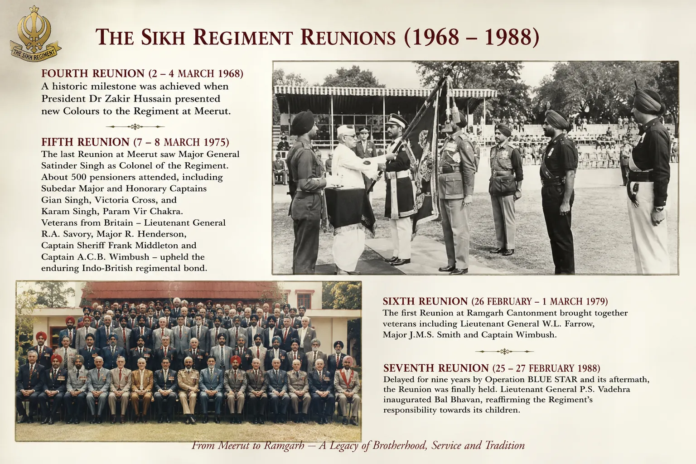

ਰੰਗ, ਸੈਨਿਕ ਅਤੇ ਰਾਮਗੜ੍ਹ ਦੀ ਓਰ ਹੋਣ ਵਾਲੀ ਚਲ


ਸਿਰਲੇਖ: Colours, Veterans and the Move to Ramgarh
ਸ਼੍ਰੇਣੀ: Colours, Veterans and the Move to Ramgarh
ਕਲਾਕਾਰ: ਸਿੱਖ ਰੈਜੀਮੈਂਟal Centre
ਸਾਲ: ਇਤਿਹਾਸਕ
ਸ਼੍ਰੇਣੀ: Colours, Veterans and the Move to Ramgarh
ਕਲਾਕਾਰ: ਸਿੱਖ ਰੈਜੀਮੈਂਟal Centre
ਸਾਲ: ਇਤਿਹਾਸਕ
ਰੰਗ, ਸੈਨਿਕ ਅਤੇ ਰਾਮਗੜ੍ਹ ਦੀ ਓਰ ਹੋਣ ਵਾਲੀ ਚਲ
ਚੌਥਾ ਰੀਯੂਨੀਅਨ, 2 ਤੋਂ 4 ਮਾਰਚ 1968, ਇੱਕ ਮੀਲ ਦਾ ਪੱਥਰ ਬਣ ਗਿਆ ਜਦੋਂ ਰਾਸ਼ਟਰਪਤੀ ਡਾਕਟਰ ਜ਼ਾਕਿਰ ਹੁਸੈਨ ਨੇ ਮੇਰਠ ਵਿਖੇ ਰੈਜੀਮੈਂਟ ਨੂੰ ਨਵੇਂ ਰੰਗ ਪੇਸ਼ ਕੀਤੇ। ਪੰਜਵਾਂ, 7-8 ਮਾਰਚ 1975 ਨੂੰ ਮੇਰਠ ਵਿਖੇ ਆਖ਼ਰੀ ਸੀ। ਮੇਜਰ ਜਨਰਲ ਸਤਿੰਦਰ ਸਿੰਘ ਰੈਜੀਮੈਂਟ ਦੇ ਕਰਨਲ ਸਨ, ਅਤੇ ਸੂਬੇਦਾਰ ਮੇਜਰ ਅਤੇ ਆਨਰੇਰੀ ਕੈਪਟਨ ਗਿਆਨ ਸਿੰਘ, ਵਿਕਟੋਰੀਆ ਕਰਾਸ, ਅਤੇ ਕਰਮ ਸਿੰਘ, ਪਰਮਵੀਰ ਚੱਕਰ ਸਮੇਤ ਲਗਭਗ 500 ਪੈਨਸ਼ਨਰ ਹਾਜ਼ਰ ਸਨ। ਲੈਫਟੀਨੈਂਟ ਜਨਰਲ ਆਰ.ਏ. ਸੇਵਰੀ, ਮੇਜਰ ਆਰ. ਹੈਂਡਰਸਨ, ਕੈਪਟਨ ਸ਼ੈਰਿਫ ਫਰੈਂਕ ਮਿਡਲਟਨ ਅਤੇ ਕੈਪਟਨ ਏ.ਸੀ.ਬੀ. ਵਿੰਬਸ਼ ਨੇ ਪੁਰਾਣੀ ਇੰਡੋ-ਬ੍ਰਿਟਿਸ਼ ਰੈਜੀਮੈਂਟਲ ਐਸੋਸੀਏਸ਼ਨ ਨੂੰ ਜਾਰੀ ਰੱਖਦੇ ਹੋਏ, ਬ੍ਰਿਟੇਨ ਤੋਂ ਯਾਤਰਾ ਕੀਤੀ। ਛੇਵਾਂ ਰੀਯੂਨੀਅਨ, 26 ਫਰਵਰੀ ਤੋਂ 1 ਮਾਰਚ 1979 ਤੱਕ, ਰਾਮਗੜ੍ਹ ਛਾਉਣੀ ਵਿਖੇ ਪਹਿਲਾ ਸੀ। ਇਸ ਨੇ ਲੈਫਟੀਨੈਂਟ ਜਨਰਲ ਡਬਲਯੂ.ਐਲ. ਫੈਰੋ, ਮੇਜਰ ਜੇ.ਐਮ.ਐਸ. ਸਮਿਥ ਅਤੇ ਕੈਪਟਨ ਵਿੰਬੁਸ਼। ਸੱਤਵਾਂ ਓਪਰੇਸ਼ਨ ਬਲੂ ਸਟਾਰ ਅਤੇ ਇਸਦੇ ਬਾਅਦ ਦੇ ਕਾਰਨ ਨੌਂ ਸਾਲਾਂ ਲਈ ਲੇਟ ਹੋਇਆ ਸੀ ਅਤੇ ਅੰਤ ਵਿੱਚ 25 ਤੋਂ 27 ਫਰਵਰੀ 1988 ਤੱਕ ਆਯੋਜਿਤ ਕੀਤਾ ਗਿਆ ਸੀ। ਲੈਫਟੀਨੈਂਟ ਜਨਰਲ ਪੀ.ਐਸ. ਵਡੇਹਰਾ ਨੇ ਬਾਲ ਭਵਨ ਦਾ ਉਦਘਾਟਨ ਕੀਤਾ, ਆਪਣੇ ਬੱਚਿਆਂ ਪ੍ਰਤੀ ਰੈਜੀਮੈਂਟ ਦੀ ਜ਼ਿੰਮੇਵਾਰੀ ਦੀ ਪੁਸ਼ਟੀ ਕੀਤੀ।
ਚੌਥਾ ਰੀਯੂਨੀਅਨ, 2 ਤੋਂ 4 ਮਾਰਚ 1968, ਇੱਕ ਮੀਲ ਦਾ ਪੱਥਰ ਬਣ ਗਿਆ ਜਦੋਂ ਰਾਸ਼ਟਰਪਤੀ ਡਾਕਟਰ ਜ਼ਾਕਿਰ ਹੁਸੈਨ ਨੇ ਮੇਰਠ ਵਿਖੇ ਰੈਜੀਮੈਂਟ ਨੂੰ ਨਵੇਂ ਰੰਗ ਪੇਸ਼ ਕੀਤੇ। ਪੰਜਵਾਂ, 7-8 ਮਾਰਚ 1975 ਨੂੰ ਮੇਰਠ ਵਿਖੇ ਆਖ਼ਰੀ ਸੀ। ਮੇਜਰ ਜਨਰਲ ਸਤਿੰਦਰ ਸਿੰਘ ਰੈਜੀਮੈਂਟ ਦੇ ਕਰਨਲ ਸਨ, ਅਤੇ ਸੂਬੇਦਾਰ ਮੇਜਰ ਅਤੇ ਆਨਰੇਰੀ ਕੈਪਟਨ ਗਿਆਨ ਸਿੰਘ, ਵਿਕਟੋਰੀਆ ਕਰਾਸ, ਅਤੇ ਕਰਮ ਸਿੰਘ, ਪਰਮਵੀਰ ਚੱਕਰ ਸਮੇਤ ਲਗਭਗ 500 ਪੈਨਸ਼ਨਰ ਹਾਜ਼ਰ ਸਨ। ਲੈਫਟੀਨੈਂਟ ਜਨਰਲ ਆਰ.ਏ. ਸੇਵਰੀ, ਮੇਜਰ ਆਰ. ਹੈਂਡਰਸਨ, ਕੈਪਟਨ ਸ਼ੈਰਿਫ ਫਰੈਂਕ ਮਿਡਲਟਨ ਅਤੇ ਕੈਪਟਨ ਏ.ਸੀ.ਬੀ. ਵਿੰਬਸ਼ ਨੇ ਪੁਰਾਣੀ ਇੰਡੋ-ਬ੍ਰਿਟਿਸ਼ ਰੈਜੀਮੈਂਟਲ ਐਸੋਸੀਏਸ਼ਨ ਨੂੰ ਜਾਰੀ ਰੱਖਦੇ ਹੋਏ, ਬ੍ਰਿਟੇਨ ਤੋਂ ਯਾਤਰਾ ਕੀਤੀ। ਛੇਵਾਂ ਰੀਯੂਨੀਅਨ, 26 ਫਰਵਰੀ ਤੋਂ 1 ਮਾਰਚ 1979 ਤੱਕ, ਰਾਮਗੜ੍ਹ ਛਾਉਣੀ ਵਿਖੇ ਪਹਿਲਾ ਸੀ। ਇਸ ਨੇ ਲੈਫਟੀਨੈਂਟ ਜਨਰਲ ਡਬਲਯੂ.ਐਲ. ਫੈਰੋ, ਮੇਜਰ ਜੇ.ਐਮ.ਐਸ. ਸਮਿਥ ਅਤੇ ਕੈਪਟਨ ਵਿੰਬੁਸ਼। ਸੱਤਵਾਂ ਓਪਰੇਸ਼ਨ ਬਲੂ ਸਟਾਰ ਅਤੇ ਇਸਦੇ ਬਾਅਦ ਦੇ ਕਾਰਨ ਨੌਂ ਸਾਲਾਂ ਲਈ ਲੇਟ ਹੋਇਆ ਸੀ ਅਤੇ ਅੰਤ ਵਿੱਚ 25 ਤੋਂ 27 ਫਰਵਰੀ 1988 ਤੱਕ ਆਯੋਜਿਤ ਕੀਤਾ ਗਿਆ ਸੀ। ਲੈਫਟੀਨੈਂਟ ਜਨਰਲ ਪੀ.ਐਸ. ਵਡੇਹਰਾ ਨੇ ਬਾਲ ਭਵਨ ਦਾ ਉਦਘਾਟਨ ਕੀਤਾ, ਆਪਣੇ ਬੱਚਿਆਂ ਪ੍ਰਤੀ ਰੈਜੀਮੈਂਟ ਦੀ ਜ਼ਿੰਮੇਵਾਰੀ ਦੀ ਪੁਸ਼ਟੀ ਕੀਤੀ।
ਮੋਬਾਈਲ 'ਤੇ ਖੋਲ੍ਹੋ
ਆਪਣੇ ਫ਼ੋਨ 'ਤੇ ਇਸ ਕਲਾ ਰਿਕਾਰਡ ਨੂੰ ਦੇਖਣ ਲਈ ਸਕੈਨ ਕਰੋ।